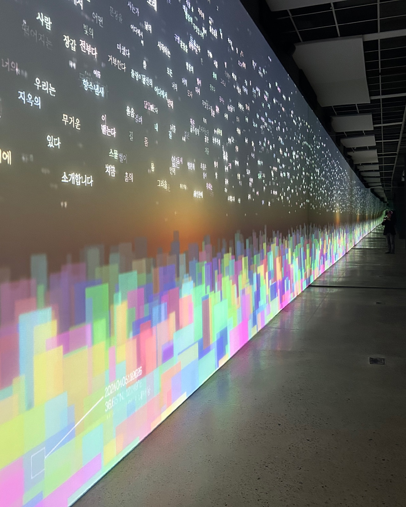
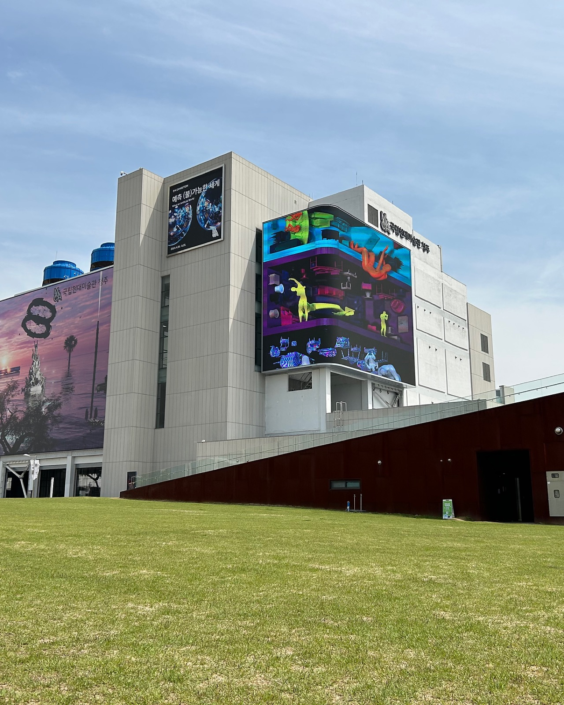
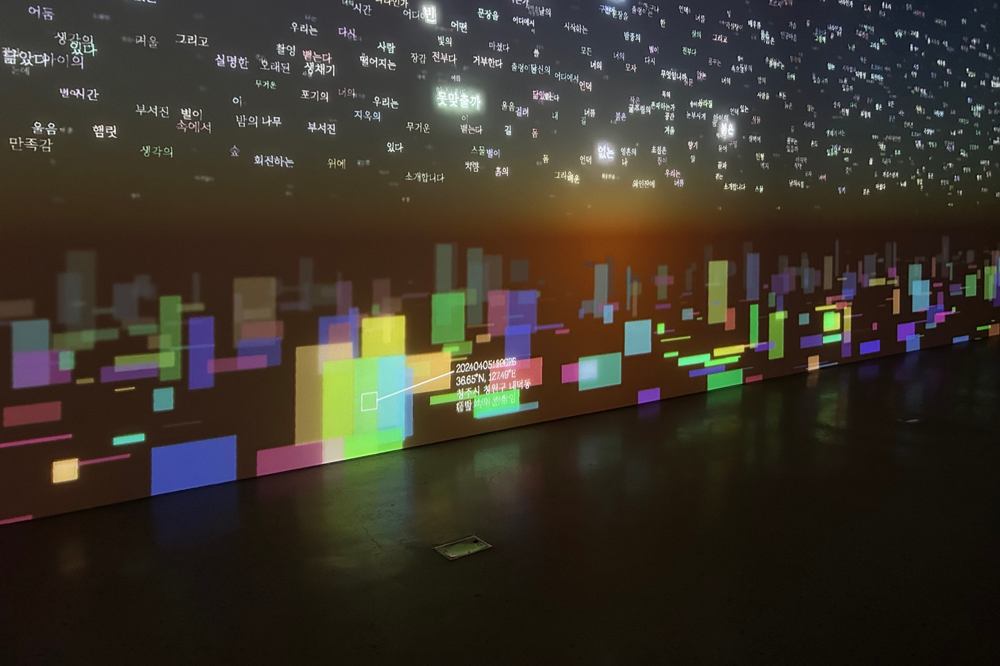
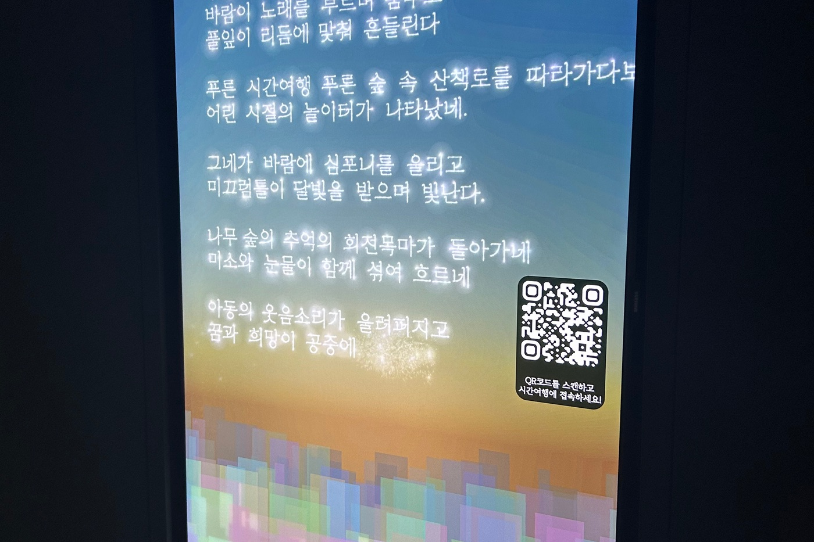
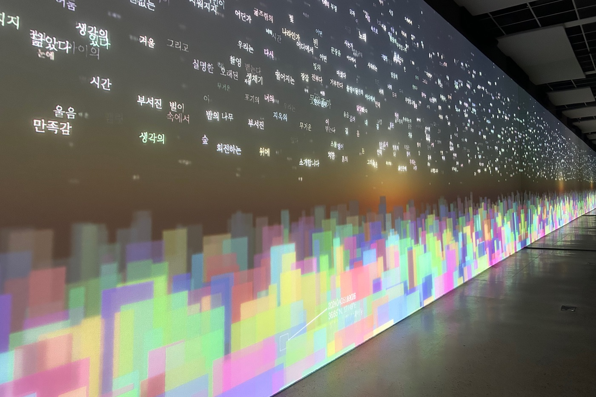
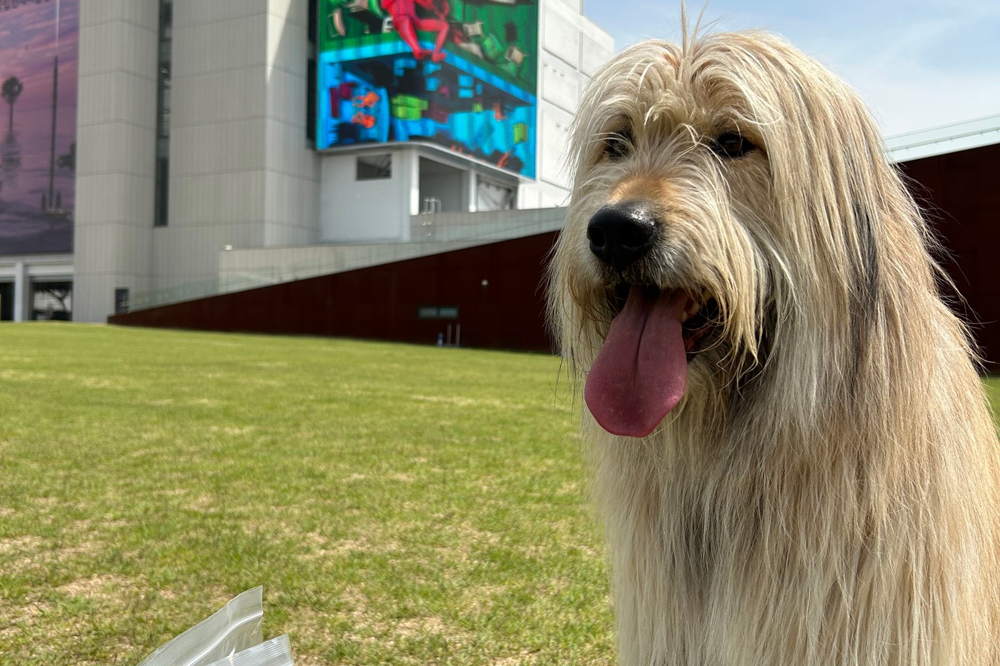

Group Exhibition — 2024
What an Artificial World
AI와 함께 쓰는 시적 공간, 그리고 AI의 시선으로 재배열된 공간 — Slitscope가 참여한 국립현대미술관 청주 그룹展.
A poetic space co-written with AI, and a space rearranged through AI’s gaze — Slitscope’s contribution to this group exhibition at MMCA Cheongju.
국립현대미술관 청주에서 열린 그룹展으로, 김제민은 AI 프로젝트 Slitscope의 이름으로 ‘Poem Travel 2.0’과 ‘Ludenstopia’ 두 작업을 선보였습니다.
At this group exhibition held at MMCA Cheongju, Kim JaeMin presented two works under the AI project Slitscope: ‘Poem Travel 2.0’ and ‘Ludenstopia’.
Presented Work — Ⅰ
Poem Travel 2.0
AI, 참여형 프로젝트, 데이터 시각화, 가변 크기, 2024
AI, participatory project, data visualization, dimensions variable, 2024
Slitscope의 Poem Travel은 ‘SIA’라는 이름의 인공지능과 함께 시를 짓는 경험을 제공합니다. SIA는 15,000편이 넘는 한국 현대시 데이터를 학습하고 거대언어모델을 파인튜닝해 만들어졌으며, 여러 현대시의 표현들이 서로 다른 위치에서 관계 맺는 ‘시적 언어 공간’이라는 메타언어적 공간 위에 놓입니다. 이 작업은 청주라는 지역의 장소성을 반영한 ‘시적 공간’ 위에서 펼쳐집니다.
Slitscope는 청주 지역의 지도를 시적 언어 공간 위에 겹쳐, 물리적 구획의 공간을 초월하며 실재·AI·인간 사이의 상호작용을 매개하는 우주를 만들어냅니다. Poem Travel은 다차원적 여정으로의 초대입니다. 누구나 미술관 안의 설치 작업을 통해서든, 이 작업의 출발점인 청주라는 도시를 통해서든, 혹은 웹사이트 접속을 통해서든 이 여정에 참여할 수 있습니다.
참여자가 Poem Travel에 접속하면 현재 위치에 따라 일련의 시적 주제가 추출되고, SIA가 참여자가 선택한 주제를 바탕으로 시를 짓습니다. 시는 언제든 단어나 문장을 바꾸며 방향을 전환할 수 있습니다. 이 협업적 여정의 이미지와 결과물은 전시장의 대형 스크린 작업과 실시간으로 동기화되며, 시 쓰기를 매개로 한 인간과 AI의 상호작용은 공진화적 관계를 연상시킵니다.
Slitscope’s Poem Travel offers an opportunity to write a poem with an artificial intelligence named SIA, trained on more than 15,000 modern Korean poems and fine-tuned from a large language model. The work is set in a ‘poetic language space’ that reflects the local characteristics of Cheongju, superimposing a map of the region onto that space to mediate interaction between the real, the AI, and the human. Anyone can participate — through the museum installation, the city of Cheongju itself, or the project’s website — composing a poem with SIA that shifts and evolves, its results synchronized live with a large screen in the exhibition space.
National Museum of Modern and Contemporary Art, Cheongju — 2024





Presented Work — Ⅱ
Ludenstopia
AI, 아나모픽, digital media, 2021
AI, anamorphic, digital media, 2021
역사적·사회적·경제적·문화적 함의를 알지 못하는 AI가 이해한 두 개의 공간과, AI가 상상한 제3의 공간을 재배열하는 작업입니다. 개인과 사회, 현실과 상상, 생존과 놀이의 경계가 흐려지며, 우리는 이를 유희적인 세계, ‘루덴스토피아(Ludenstopia)’라 부릅니다.
The work rearranges two spaces as understood by an AI unaware of their historical, social, economic, and cultural implications, and a third space imagined by the AI — blurring the boundaries between individual and society, reality and imagination, survival and play. We call this playful world ‘Ludenstopia’.
Ludenstopia 작품 페이지에서 전체 전시 이력 보기 →See the full exhibition history on the Ludenstopia work page →